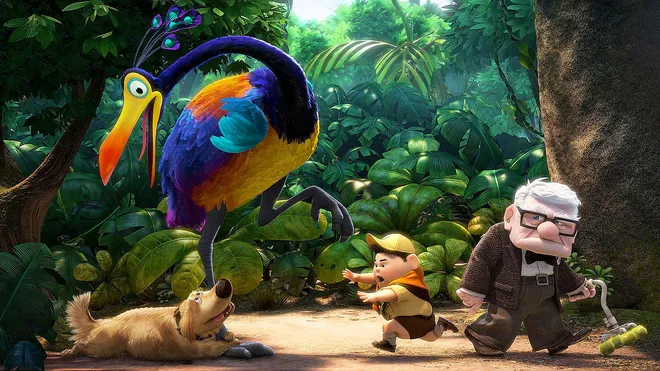
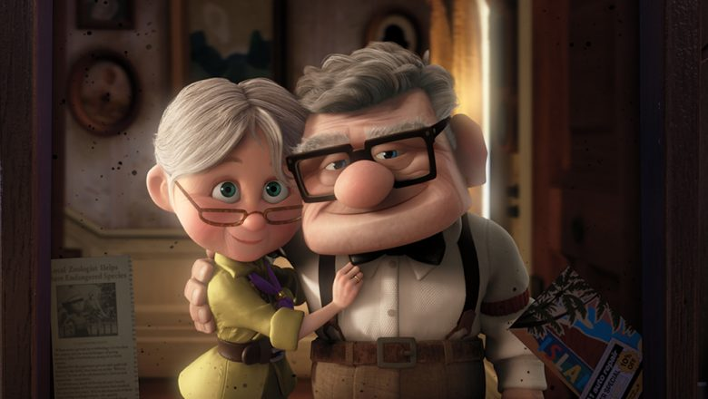
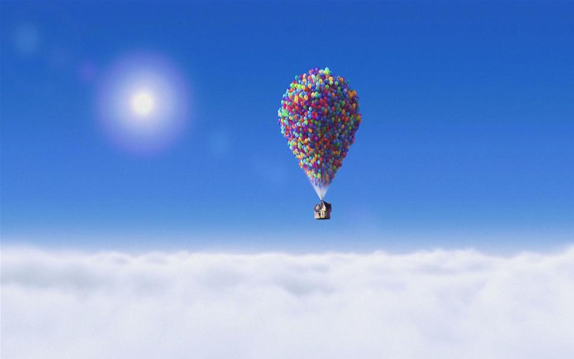

Up is a 2009 American animated comedy-drama adventure film produced by Pixar Animation Studios for Walt Disney Pictures. Directed by Pete Docter, the film centers on Carl Fredricksen (voiced by Ed Asner), an elderly widower who travels to South America with youngster Russell (voiced by Jordan Nagai) in order to fulfill a promise he made to his late wife. Along the way, they befriend a talking dog (voiced by Peterson) as well as an exotic bird and encounter Carl's childhood idol (voiced by Christopher Plummer), who has sinister plans to capture the bird.

Originally titled Heliums, Docter conceived the outline for Up in 2004 based on fantasies of escaping from life when it became too irritating. He and eleven other Pixar artists spent three days in Venezuela for research and inspiration. The designs of the characters were caricatured and stylized considerably, and animators were challenged with creating realistic cloth. It was Pixar's first film to be presented in 3D format.It was nominated for five awards at the 82nd Academy Awards, winning two, and received numerous other accolades. Among its Academy Award nominations, it became the second of three animated films ever to receive a nomination for the Academy Award for Best Picture. Since then, it has been and continues to be regarded as one of the greatest animated films of the 21st century and of all time.

The movie begins with one of the most touching sequences in animation— the wordless montage of Carl and Ellie’s life together. In just a few minutes, the film captures love, dreams, loss, and the weight of growing old, setting the emotional tone for everything that follows. The story works because it balances deep emotion with humor and warmth. Carl’s unlikely partnership with Russell, a young and overly enthusiastic Wilderness Explorer, slowly pulls him out of grief. Their journey reminds Carl—and the audience—that adventure isn’t only in grand plans, but also in the people we meet and the small moments we choose to cherish.

Visually, Up is stunning. Pixar’s animation team used bright colors, exaggerated shapes, and soft lighting to make the world feel both magical and grounded. Carl’s boxy, rigid design contrasts with Russell’s round softness, symbolizing their personalities. The floating house, with its colorful balloons, became an iconic image that represents hope and memory. Paradise Falls was inspired by the real-world Angel Falls in Venezuela, and animators traveled there to study the landscapes, lighting, and movement of water for realism.The film took years to develop. Director Pete Docter wanted to explore themes of aging and holding onto the past, which was unusual for an animated children’s film but became one of Pixar’s boldest creative choices. Pixar also built new animation tools to handle the complexity of the balloon shots; each balloon was individually animated to move naturally.